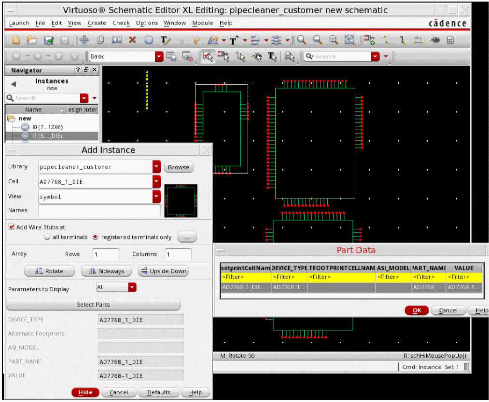
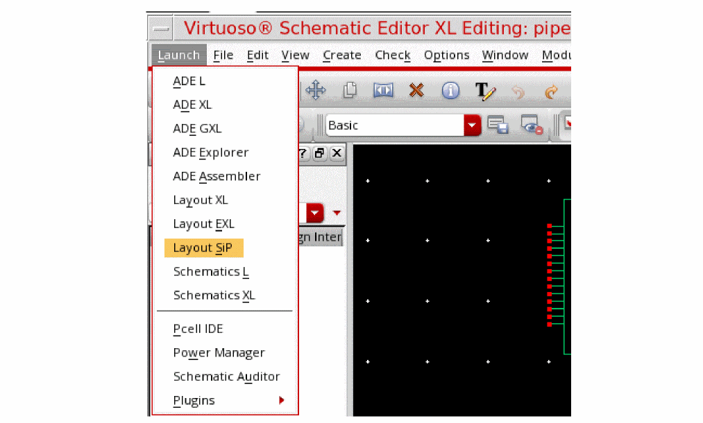
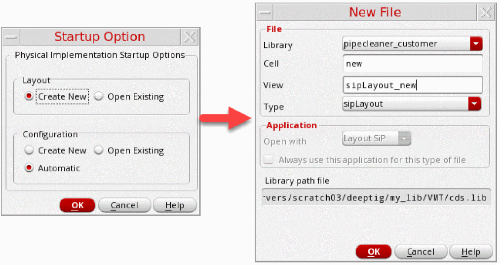
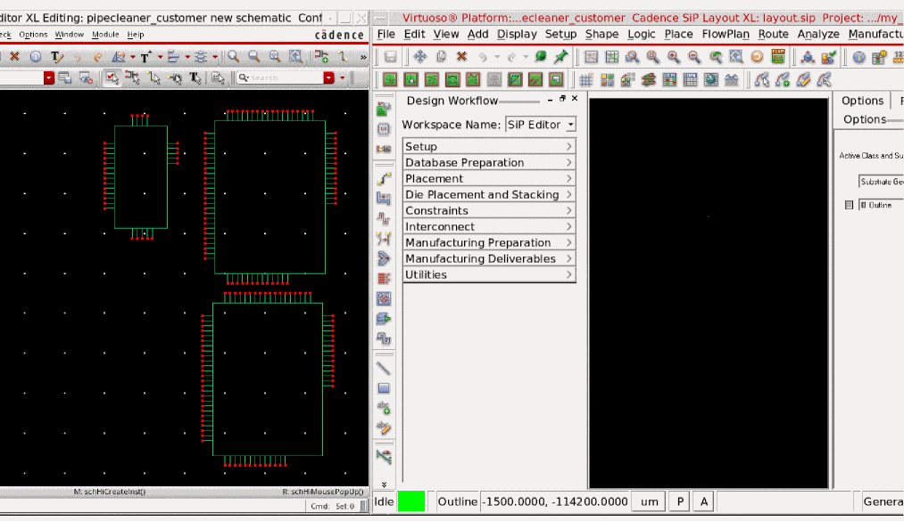
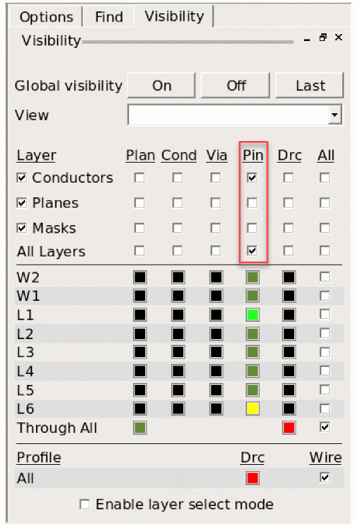

Creating a SiP Layout from Package Schematic
This topic describes how to generate the SiP layout from the package schematic and edit the package layout. The development of any design involves an iterative process of synchronizing the differences between the schematic and the SiP layout. Changes, especially caused by Engineering Change Orders (ECOs), are made in the package schematic and need to be updated in the SiP layout. Similarly, changes in the SiP layout, such as reference designator changes and section and pin swaps, require updating the package schematic.
Ensure that the IC, PCB, and Sigrity hierarchy paths have been set for seamless flow of tasks in the Virtuoso MultiTech Framework environment.
-
Create a package schematic by selecting parts and adding instances in the canvas.
 -
Choose Launch – Layout SiP.
 -
Create a new layout by using the New File form. The Cadence SiP Layout opens.
 -
Arrange Cadence Virtuoso Schematic Editor and Cadence SiP Layout windows alongside.
 - Import the technology and parameter files.
-
In the Visibility tab on the canvas, enable Pin for Layer Conductors.

Return to top